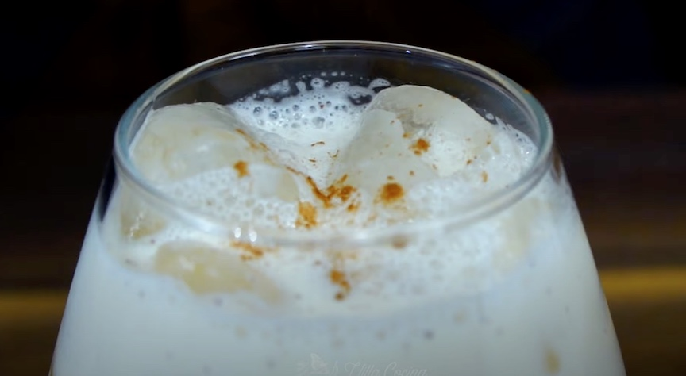

Traditional Mexican Horchata

Why are you going to love this drink?
Horchata is the perfect blend of sweet and creamy. It has a deliciously refreshing flavor that
is perfect for hot summer days. Its sweetness comes primarily from the sweetened condensed milk,
while the creaminess mostly comes from the ground rice and cinnamon used in its preparation.
Horchata is often regarded as a healthier alternative to other sweet drinks, such as soda or
fruit juices, as it is made with natural ingredients and contains less sugar and fewer calories.
However that may not be the case with this amazing recipe.
Steps
- Soak the rice and cinnamon in the hot water for at least 8 hours, over night is best.
- Once soaking is finished put the rice, cinnamon, and water mixture in a blender and puree.
-
Arriving at a smooth puree you now need to strain the mixture using a fine strainer and a
single layer of cheese cloth.
-
Now in a tall glass pitcher combine the pureed rice cinnamon mixture with 4 cups of room
temperature water. Stir in both cans of milk (sweetened condensed and evaporated). Finish
it off by stirring in the fresh whole milk and vanilla until it is all smooth and consistent.
- Pour the horchata into a glass and add ice if you like it cold.
- Sprinkle a small amount of cinnamon powder on the ice for a bit of ambiance.
>
Ingredients
- 1 cup long grain white rice
- 1 whole cinnamon stick
- 2 cups hot water + 4 cups room temperature water
- 1 (12 oz) can of evaporated milk
- 1 (14 oz) can sweetened condensed milk
- 1/2 cup of whole milk
- 1 1/2 tsp vanilla extract (Mexican - preferred)
*You can add granulated white sugar if you want it sweeter
You will also need: